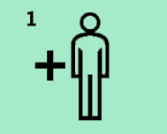

Os 10 princípios que devem de ser seguidos pelas empresas
O combate à pandemia tem sido feito com base nos comportamentos de cada um e no cumprimento das orientações dos profissionais de saúde.
Não se tem tratado apenas de alterações temporárias e pontuais, mas mudanças que questionam todo um posicionamento do cidadão como
consumidor. A diferença é que estamos perante uma urgência e um fenómeno que depende fundamentalmente da atitude de cada um.

A China, por vontade própria ou não, impulsionou um movimento no mundo. Cabe a todos os seres humanos decidir continuar a poluir o
ambiente ou a adotar medidas do foro ambiental, apresentando um modelo de “uma terra verde”, em que se começa de novo, logo após o
fim da pandemia ou, pelo menos, o controle da mesma. Esta altura contribui assim para novos pensamentos, novas formas de economia e
novas formas de relações internacionais, na forma como todos os países interagem entre si.